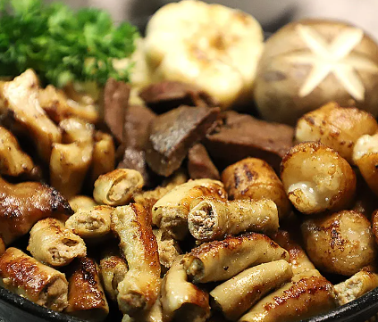

내가 태어난 곳
저는 1991년, 서울시 양천구 소재의 병원에서 태어났습니다.수원으로 온지는 2년정도 지나서 아직 익숙하지는 않지만, 서울처럼 사람이 너무 많지 않아서 좋고 무엇보다 집 근처에 호수공원과 저수지가 많이 있어서 살기에 좋습니다.
내가 가봤던 곳

오페라하우스
해외의 가봤던 곳은 호주의 시드니 오페라하우스입니다. 맛있는 음식도 많이 먹고 여유롭게 관광을 했던 행복한 기억이 남아있습니다.

남한산성
해외보다는 국내 여행을 자주 가곤하는데, 사진은 작년에 남한산성에 갔을 때의 사진입니다. 조금은 더운 날씨였지만 날이 맑아서 경치가 매우 좋았습니다. 여행갔을 때의 사진을 보면, 여행을 하고있는 것 같은 기분이 들어서 스트레스가 풀립니다. 그래서 종종 여행지의 사진을 보며 시간을 보냅니다.
내가 먹고 싶은 것

곱창
먹고싶은 음식은 곱창입니다. 최근에는 망포동 소재의 정철 황소곱창을 자주 방문합니다. 곱창은 언제 먹어도 질리지 않는 저의 최애 음식입니다.
내가 하고 싶은 것
자전거
저는 자전거타는 것을 좋아합니다. 보통 집에서 광교호수공원까지 자전거를 타고 가서 공원에서 시간을 보내다가 돌아오곤합니다.
전기자전거
최근에는 전기 자전거를 자주 이용합니다. 자전거보다 힘이 덜 들어가면서도 더 빠른 속력으로 달릴 수 있어서 좋습니다.